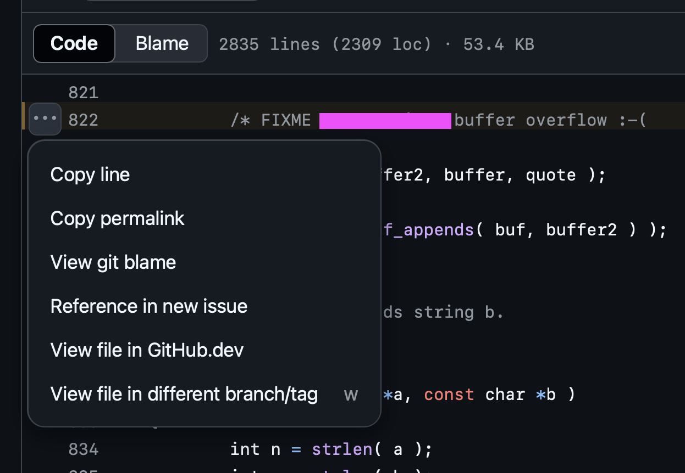

Din uppgift är att hitta en länk till en rad kod i ett offentligt GitHub-repository som innehåller en kommentar som matchar följande regex:
/FIXME.*buffer overflow/
Länken måste peka till en rad i master-branchen
Exempelvis: https://github.com/foo/bar/blob/master/src/util.c#L123
En buffer overflow inträffar när mängden data överstiger den tilldelade minnesbuffertens kapacitet, vilket kan leda till oväntat beteende, krascher eller säkerhetssårbarheter. Ofta sker detta på grund av bristande kontroll över gränser.
Tips: Du kan använda Sourcegraph för att söka i offentliga repositories på GitHub.
För att kopiera raden du har hittat i ett GitHub repository så kan du klicka på de tre punkterna bredvid raden, sedan klicka på "Copy Permalink" och ange nedan.
